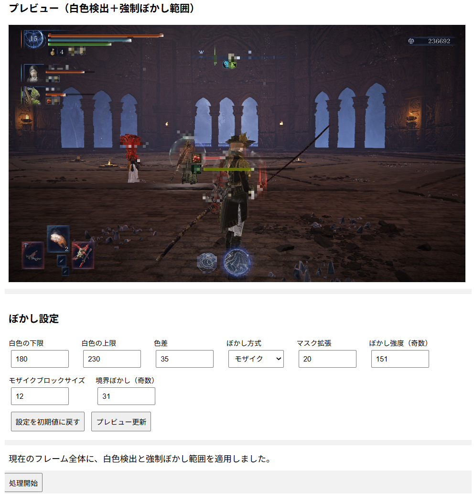

Welcome to my personal website.
This website is a personal space for sharing my software development projects, programming experiments, and technical work.
A web-based tool for applying mosaic or Gaussian blur to selected areas of video. It can be used to obscure faces, license plates, or other sensitive areas in video footage.

The project is developed with Python, Flask, OpenCV, JavaScript, HTML, and CSS.
View on GitHubExperiments and applications using Raspberry Pi, Python, GPIO, sensors, cameras, and network services.
Development of web applications using HTML, CSS, JavaScript, PHP, Python, and related technologies.
My source code and development projects are available on GitHub.